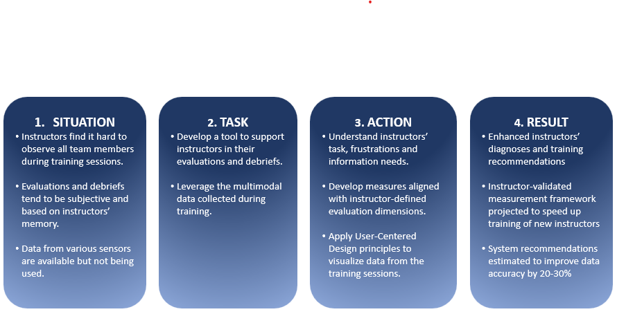
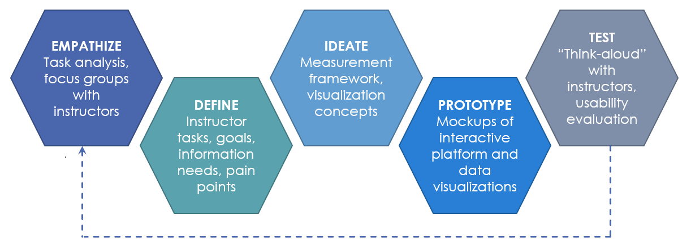

Goal
- Support instructors with objective performance insights.
- Reduce subjectivity in evaluations.
- Improve training and team performance.
Problem
- A single instructor is typically responsible for observing and evaluating an entire team's training session.
- Evaluations are often subjective, inconsistent, and difficult to standardize.

Process
- I applied design thinking process to ensure the solution was user-centered.
